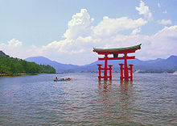
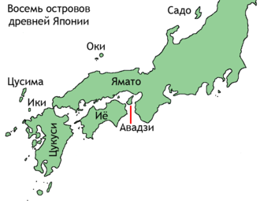
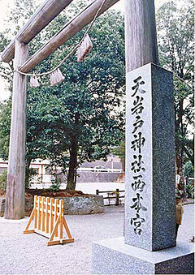

Религия
Основа синто - в поклонении и обожествлении природных сил и явлений. Считается, что всё сущее на Земле в той или иной степени одушевлено, обожествлено, даже те вещи, которые мы привыкли считать неодушевлёнными - например, камень или дерево, и у каждой вещи есть свой дух, божество (ками). Некоторые ками являются духами местности, другие олицетворяют природные явления, являются покровителями семей и родов. Другие ками представляют глобальные природные явления, такие, как Аматерасу Омиками, богиня Солнца.
Главным принципом синто является жизнь в согласии с природой и людьми. Мир ками - не потустороннее обиталище, но общая естественная среда с миром людей. Поэтому людям нет необходимости искать спасения в другом мире, а надо пытаться добиться гармонии с ками в этой жизни. Синто является глубоко национальной японской религией и в каком-то смысле олицетворяет японскую нацию, её обычаи, характер и культуру.
Между божествами и людьми существует тесная связь даже по происхождению: связующим звеном является микадо, потомок Аматэрасу и её представитель на земле, а также родоначальник всех японцев. Важнейшие легенды относительно божеств, составляющих пантеон синтоистов, изложены в начале главы об истории. Из них можно видеть, что божества эти имеют тесную связь с силами природы и часто даже представляют их олицетворение.
Главную роль между ними играет богиня солнца Аматэрасу; затем есть божества луны, земли, подземного царства, ветра, грома, огня, воды, домашнего очага, пищи, заразных болезней и т. п. К обоготворению природы в синтоизме примешивается культ предков: божеские почести воздаются здесь как прежним, так и царствующему микадо, душам героев и вообще предков.
Позже появляется буддизм. В Японии он распадается на несколько сект и переплетается с местным синтоизмом настолько, что не всегда можно понять, какая секта больше проникнута буддизмом, а какая синтоизмом. Каждая секта почитает своих богов. «Амидаистские» секты средневекового происхождения уповают на спасителя Будду-Амиду (Амитабу). В секте сингон верховный будда - Дайнити-Нёрай, «Великий солнечный Будда» В других сектах почитаются группа пяти богов Мёо, «Великие Будды мудрости», один из них - Фудо-мёо, изображается в виде сурового воина с мечом и злым лицом. Это значит то, что он уничтожает жадность, гнев и невежество. Основные божества те же, что и в других странах, их соответствия: Буцу - Будда, Босацу - Бодхисаттва, Сяка-Нёрай - Шакьямуни, Дарума или Бодайдарума - Бодхидхарма.
Самая массовая секта - Сока-гаккай, активно вмешивается в политическую жизнь страны. Наконец, наиболее широкое распространение получила секта «дзэн». Её поклонников можно встретить далеко за пределами Японии. Её суть - мистическое самоуглубление и постижение истины вне разума.
Древней же религией в Японии был, однако, не синтоизм, а культ родовых духов (ками). Он малоизвестен. Жрецы этого культа назывались ура-бэ (гадатели) и ими-бэ (заклинатели). Кроме этого, в народных слоях пользуется большой популярностью группа богов «сити фукудзин», то есть семь богов счастья. Фактически большая часть японцев не отдаёт предпочтение какой-либо религии. В быту большинства японцев встречаются элементы почитания обеих религий. Наряду с этим значительная часть японцев с почтением относится к христианству. Подобное взаимопроникновение и терпимость связаны с особым менталитетом японцев, способностью сгладив углы вобрать в себя различные на первый взгляд малосовместимые элементы.
На раннем этапе развития японского общества был широко распространён тотемизм. Из древних японских религиозных верований сформировались представления синто - основной религии Японии. Синтоизм (или синто) дословно можно перевести как «путь множества ками (богов)»). Основу этого течения составляет поклонение силам природы. Согласно представлениям синто солнце, деревья, горы, камни и природные явления являются ками (или микото) и наделены душой, им поклоняются в специально построенных для этой цели храмах. Важной особенностью синтоизма является культ предков.
Древние японцы считали, что японские острова и люди, населявшие их, были созданы ками, что нашло своё отражение в японской мифологии. С этими представлениями связан также культ императора - считалось, что императорская семья происходила от богов-создателей японского архипелага. Древние мифы и легенды синтоизма о создании японских островов богами и передаче власти над страной потомкам богов (Дзимму и Ниниги) сохранились в сводах «Кодзики» и «Нихонги».
Позже, из Индии через Корею и Китай, в страну проникает буддизм, 552 год считается официальной датой признания новой религии. Буддизм оказал большое влияние на образование, литературу и искусство Японии, хотя сам значительно трансформировался и сильно отличается от индийского и китайского буддизма. При императоре Сёму (правил в 724-749) буддизм был признан государственной религией.
В середине XVI века в Японию пришло христианство, поддержанное Ода Нобунагой и запрещённое впоследствии сёгунатом Токугава. Запрет на христианство был снят после реставрации Мэйдзи. В современной Японии доля населения, одновременно исповедующего две религии - буддизм и синтоизм, составляет 84 %, около 0,7 % населения страны исповедует христианство.

Религия в Японии представлена главным образом буддизмом и синтоизмом. Большинство верующих в Японии причисляет себя к обеим религиям сразу, что свидетельствует о религиозном синкретизме. В 1886 году, во время реставрации Мэйдзисинтоизм был объявлен единственной и обязательной государственной религией японского государства. После Второй мировой войны с принятием новой японской конституции в 1947 году синтоизм потерял этот статус.
Буддисты и синтоисты составляют по некоторым оценкам до 84-96 % населения, представляя большое количество верующих всинкретизме обеих религий. Однако эти оценки основаны на ассоциации японцев с тем или иным храмом, а не на количестве действительно верующих. Профессор Роберт Кисала предполагает, что всего 30 % населения идентифицируют себя как верующие.
Китайские даосизм, конфуцианство и буддизм также повлияли на японские верования и традиции. Религия в Японии склонна ксинкретизму, что выливается в смешение различных религиозных практик. Так, взрослые и дети отмечают ритуалы синто, школьники молятся перед экзаменами, молодые пары устраивают свадебные церемонии в христианской церкви, а похороны - в буддистском храме. Христиане представляют собой религиозное меньшинство, всего 2,04 % населения. Среди объединений христианских церквей, действующих в общеяпонском масштабе, самое крупное - Католический центральный совет, далее, по числу последователей идут Свидетели Иеговы, пятидесятники и прихожане Объединённой церкви Христа в Японии. С середины XIX века в Японии также появились различные религиозные секты, такие как Тэнрикё и Аум Синрикё.
Мифология
Японская мифология - это система сакральных знаний, включающая традиции синтоизма и буддизма, а также народные поверья. Религия синто содержит огромное количество ками, которые задействованы в мифологии.
Большая часть японских мифов, известных на сегодняшний день, известна благодаря «Кодзики», «Нихон сёки» и некоторым дополнительным источникам. «Кодзики», или «Записи о деяниях древности» - древнейшее на сегодняшний день собрание мифов и легенд. «Синтосю», датированная XIV веком, с буддистской точки зрения объясняет, как появились боги, а эпическая поэма «Хоцума Цутаэ» содержит альтернативные версии мифов.
Японская мифология прямо связана с культом императора: императорская семья традиционно считается прямым потомком первых богов. Японское слово тэнно, император, буквально обозначает «божественный (или небесный) правитель».
Мифология Японии включает большое количество божеств (это закреплено в поговорке «Япония - страна восьми миллионов божеств»). Имена многих из них весьма длинные. Например, Ниниги - Амэ Нигисикуги Нигисиамацухико Хиконо-но Ниниги-но Микото, что обычно сокращается как Хикохо-но Ниниги или Хоно-Ниниги.
«Кото Амацуками» («Уважаемые небесные боги») - группа пятерых ками, которые появились в начале начал. Когда были созданы небо и земля, три бога «Такамагахара» («Высокие небесные поля»), так называемые «Хиторигами» («Одиночные боги») снизошли на землю. Их так назвали, потому что они появлялись не в паре, как Идзанаги и Идзанами.
- Идзанаги и Идзанами
Первое поколение богов призвало Идзанаги и его будущую супругу Идзанами, чтобы те сотворили землю. Им была дана украшенная драгоценными камнями нагината - оружие, которое принято называть алебардой. Нагината носила название Аманонухоко, «Божественная алебарда с драгоценными камнями». Идзанаги и Идзанами отправились на мост, соединяющий небо и землю (Амэнокихаси), и начали перемешивать алебардой морские воды, когда же с алебарды начали падать солёные капли, они образовали остров Оногоро («самозагустевший»). Затем боги спустились с небесного моста и поселились на этом острове. Впоследствии, когда Идзанаги и Идзанами решили пожениться, они построили дворец Яхиродоно («великий дворец»). Во время брачной церемонии Идзанами, женщина, первая поприветствовала Идзанаги. Хотя он счел это не совсем приличным, свадьба все равно состоялась. Идзанами и Идзанаги были первыми из богов, кто мог рождать других божеств. У них родились двое: Хируко и Авасима, но они были некрасивы. Идзанами и Идзанаги положили детей в лодку и выпустили в море, а затем обратились к другим богам с вопросом, что же они сделали не так. Боги ответили, что во время свадебной церемонии первым должен был заговорить мужчина. Идзанами и Идзанаги повторили обряд бракосочетания, и с тех пор союз стал счастливым.
От них была рождена Оясима, великая восьмерка островов :
• Авадзи
• Иё (впоследствии Сикоку)
• Оки
• Цукуси (впоследствии Кюсю)
• Ики
• Цусима
• Садо
• Ямато (впоследствии Хонсю)
(Хоккайдо, Тисима и Окинава в древние времена не считались частью Японии) Затем родились ещё шестеро островов и множество богов. Последним является бог огня Кагуцути (или Хомусуби), рождение которого опаляет лоно Идзанами, и она умирает - согласно мифу, удаляется в царство мертвых Ёми-но куни. Идзанаги в ярости убил Кагуцути, что породило ещё несколько богов.
- Ёми, подземное царство
Убитый горем Идзанаги отправился в подземное царство Ёми, чтобы вернуть свою жену назад. Оказалось, что между земным и подземным миром нет большой разницы, за исключением вечной темноты, хотя темноты оказалось достаточно, чтобы Идзанаги страдал от отсутствия света и скучал по жизни наверху. Поначалу он даже не мог увидеть Идзанами, которую укрывали тени. Наконец, он нашёл жену, но она уже попробовала пищу царства мёртвых и навеки стала его обитательницей.
Идзанаги отказывается оставить Идзанами. Тогда она соглашается вернуться в мир живых, но хочет сначала отдохнуть некоторое время, поэтому удаляется в опочивальню и просит мужа туда не заходить. Идзанаги прождал довольно длительное время, но затем не выдержал, зашел в покои и зажёг факел. Он увидел, что некогда прекрасное тело Идзанами превратилось в гниющий труп, покрытый личинками и другими отвратительными существами. Идзанаги в ужасе закричал и спасся бегством из подземного мира, а вход туда завалил камнем. Забарикадированная Идзанами в ярости кричала, что в отместку будет каждый день забирать по 1000 живых людей, а Идзанаги ответил, что в таком случае он каждый день будет давать жизнь 1500 человек.
Так в мир вошла Смерть.
- Солнце, Луна и Море
Идзанаги побывал в Ёми, после чего решил совершить обряд очищения. Он начал раздеваться и снимать с тела украшения, и каждая драгоценность, упавшая на землю, рождала божество. Ещё большее их количество было создано во время омовения тела и лица. Наиболее важные боги:
• Аматэрасу (олицетворение солнца) - от левого глаза
• Цукуёми (олицетворение луны) - от правого глаза
• Сусаноо (олицетворение штормов и повелитель моря) - из носа
Идзанаги разделил мир между ними. Аматэрасу, получает во владение «равнину высокого неба» и становится главным божеством пантеона, покровительницей земледелия. Цукуёми стал владеть ночным временем и луной, а Сусаноо доверены морские просторы. По некоторым версиям мифа Сусаноо также повелевает стихиями, в том числе снегом и градом.
- Аматэрасу и Сусаноо
Аматэрасу, повелительница солнца, - наиболее известная богиня всей японской мифологии. Её вражда с братом Сусаноо описывается в нескольких сказаниях. Так, в одной из легенд Сусаноо вел себя грубо по отношению к Идзанаги. Идзанаги, уставший от бесконечных придирок Сусаноо, изгнал его в Ёми. Сусаноо неохотно согласился, но перед этим отправился на небесные поля Такаманохара, чтобы попрощаться с сестрой. Аматэрасу сразу преисполнилась подозрениями, потому что не верила в добрые намерения брата и хорошо знала его характер.
− С какой целью ты пришел сюда? − спросила Аматэрасу.
− Чтобы попрощаться, − ответил Сусаноо.
Аматэрасу не поверила этим словам и потребовала устроить состязание, проверяющее честность Сусаноо. Побеждал тот бог, который может дать жизнь более благородным и богоподобным детям. Аматэрасу сделала трёх женщин из меча Сусаноо, а Сусаноо - пятерых мужчин из цепочки своей сестры. Аматэрасу объявила, что раз цепочка принадлежит ей, то и мужчин следует отнести на её счет, то есть женщины являются порождениями Сусаноо.
В раздражении Сусаноо совершает ряд проступков, считавшихся тяжелейшими прегрешениями: в том числе, сдирает шкуру с живой лошади (священное животное для Аматэрасу). Аматэрасу бежала, скрылась в пещере Ама-но-Ивато («Пещера солнечного бога»), и мир погрузился во тьму. Лишь хитростью Амэ-но-Удзумэ удалось развеселить Аматэрасу и вызволить из пещеры. С тех пор Амэ-но-Удзумэ, считавшаяся богиней развлечений, стала известна как богиня утренней зари. Свет Аматэрасу был возвращён в мир. Её брата же боги, посовещавшись, изгнали.


{kind=link}
{kind=link}
{kind=link}
{kind=link}
{kind=link}
{kind=link}
{kind=link}
{kind=link}
{kind=link}
{kind=link}
.jpg){kind=link}
{kind=link}
{kind=link}